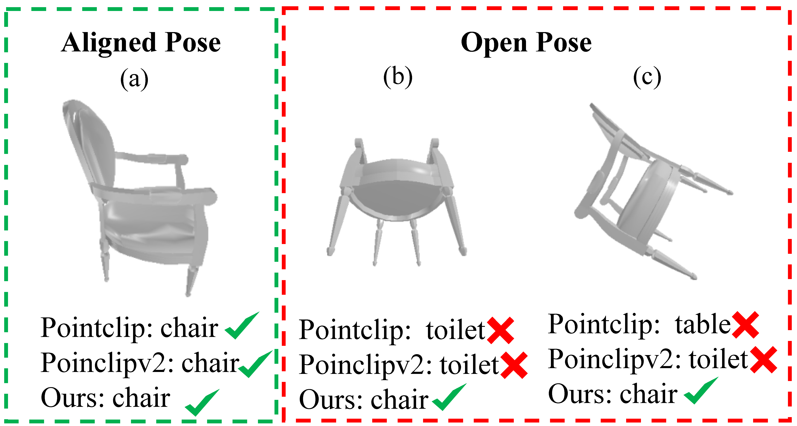

| 
|
Diff-OP3D: Bridging 2D Diffusion for Open Pose 3D Zero-Shot Classification
W. Zhao, G. Yang, C. Yang, C. Jiang, Y. Yan, R. Zhang, K. Huang
arXiv , 2023
[ Paper] [ Code]
|

|
Divide and Conquer: 3D Point Cloud Instance Segmentation With Point-Wise Binarization
W. Zhao, Y. Yan, C. Yang, J. Ye, X. Yang, K. Huang
International Conference on Computer Vision (ICCV), 2023
[ Paper] [ Code] [ Video]
|

|
Towards Deeper and Better Multi-view Feature Fusion for 3D Semantic Segmentation
C. Yang, Y. Yan, W. Zhao, J. Ye, X. Yang, K. Huang
International Conference on Neural Information Processing (ICONIP), 2023
[ Paper]
|

|
From 2D images to 3D model: Weakly Supervised Multi-View Face Reconstruction with Deep Fusion
W. Zhao, C. Yang, J. Ye, R. Zhang, Y. Yan, X. Yang, B. Dong, A. Hussain, K. Huang
arXiv , 2022
[ Paper] [ Code]
|